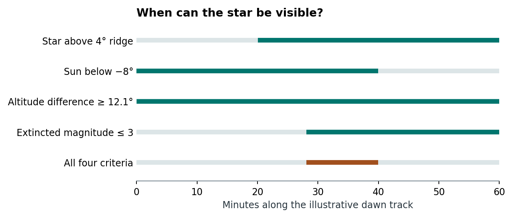

7 Seasonal stellar visibility
Function star.phases() · Package skyscapeR 2.0.9004
At an archaeological site, a star can rise above a ridge while the sky is still too bright to see it. star.phases() asks on which mornings or evenings the terrain, darkness and stellar brightness allow an opportunity to observe it. Its heliacal-rising date is the return of such an opportunity after a season of invisibility.
A seasonal search needs the skyline across the stellar track. See partial photographic horizons before supplying a sector image.
7.1 How a date is assigned
- Construct the annual cycle. The function fixes the star’s position for the chosen year and samples 365 equally spaced solar longitudes. These steps describe progress through the seasons. Their spacing in elapsed civil time varies. The package maps the longitude of each event back to a representative local Julian-calendar date in the requested year.
- Find intervals above the skyline. The stellar track is tested against the altitude of the horizon at the star’s bearing. A full profile can produce more than one interval of clearance. A track which just touches the ridge gives zero time above it. The solver refines terrain crossings separately from the sampling used for solar altitude.
- Apply the visibility criteria together. A qualifying interval must last longer than zero, the Sun must be below the adopted solar-altitude threshold, and both a star–Sun altitude separation and an extinction test must be satisfied. If the catalogue magnitude is , the required altitude difference is degrees (Purrington 1988, S74). For a magnitude 1 star this is 12.1°. The package also adds magnitudes of extinction, where is the extinction coefficient and is the airmass at stellar altitude (Schaefer 1986; Krisciunas and Schaefer 1991, eq. 14). Extinction depends on altitude above the horizontal, even if a ridge is much higher than that.
- Classify the day and its transitions. Continuous intervals of visibility give the daily phase codes. A visible ascending or descending interval below
alt.rscan qualify as rising or setting. The first transition out of an invisible season defines heliacal rising. Since the year is cyclic, a season that spans the December solstice continues across the end of the table.
7.1.1 What qualifies as a visible interval?
In R/stars.R, the year-specific stellar coordinates are held fixed while the code constructs a reusable diurnal track on a reference day starting at 2000-01-01 00:00 UTC. The seasonal loop changes the solar coordinates. Thus the time nodes of this track have computational meaning; an archaeological observation date comes from mapping the selected solar longitude back to the requested year. For an irregular skyline, the solver locates crossings, combines them with one-minute nodes and the solar grid specified by res, and refines turning points in stellar altitude. It tests each segment midpoint for clearance above the skyline. Multiple unobstructed intervals on the same track remain eligible.
For stellar altitude , solar altitude , stellar magnitude , limiting magnitude and extinction coefficient , the code uses magnitudes. On terrain-clear segments it requires finite, nonnegative extinction, , and . The angular separation here is a difference in altitudes, even when star and Sun differ substantially in bearing (Purrington 1988; Krisciunas and Schaefer 1991). Threshold margins are interpolated linearly between segment endpoints. An interval survives only when its end is strictly later than its start. Two conditions satisfied at different moments within the same segment do not by themselves establish visibility.

A second pass restricts eligible intervals to and checks the sign of the stellar altitude change. A rising interval gives R, a descending interval S and both give RS. A day with visibility elsewhere but neither classified passage gives V. With no visible interval it gives I. Thus V can be the appropriate code even for a star which crosses the skyline twice. For a detection close to a threshold, record the adopted res, extinction and solar limit. Coarse solar interpolation and a very brief modelled opportunity have different implications for the assigned date.
7.2 Choices that can change the interpretation
| Choice | Consequence for the reader |
|---|---|
| Supply a terrain profile or a single horizon altitude | A profile allows the skyline to vary along the stellar track. The default solar threshold also depends on the input form. For a fair comparison set solar.alt explicitly to the same value in both runs. |
| Set extinction, limiting magnitude and refraction | These assumptions change the visibility window. The default extinction coefficient, 0.2 magnitudes per airmass, represents a clear-sky baseline. Local observing conditions may differ. |
| Use the altitude-difference rule for other kinds of events | Purrington’s empirical relation covers dawn rising and dusk setting on the Sun’s side of the sky, down to about magnitude 3. The package extends the same threshold across relative azimuths. Opposite-horizon events and fainter stars therefore involve extrapolation (Purrington 1988, S74–75). |
| Count any positive-duration window | A short break above an uneven skyline can qualify. A human observer may need longer to find the star. Moonlight, weather and an observer’s adaptation history also affect detection (Schaefer 1987). |
| Enter a cluster such as M45 | The function applies the cluster’s integrated catalogue magnitude to a single target. Use an individual star to ask about the visibility of a particular Pleiad. |
7.3 Changes that matter for earlier analyses
The 2.0 development NEWS records changes to handling southern, circumpolar and obstructed tracks. A completely obstructed star now returns an all-invisible result. An always-clear star can still enter different seasonal phases. The separate metadata$horizon.status field lets the analyst distinguish these cases. An earlier analysis involving a star close to the circumpolar limit or a raised skyline is a priority for recalculation.
The output also distinguishes the schematic day of the seasonal cycle from metadata$events$date.julian. Use the latter when passing an event to riseset() for a terrain crossing. The crossing gives a starting time from which to examine the changing dawn sky.
Evidence for the date. The heliacal-rising comparison quantifies agreement for this event under a specified set of observing assumptions. Other phase transitions require their own evidence.
See the event-search chapter for the crossing solver and an example of reoccultation on a rising track.
7.4 Comparing the same season across stars and epochs
plot.skyscapeR.starphases() places a result and any further results on a common seasonal axis beginning at December solstice. A single cycle can be drawn as a ring or a strip. Multiple results occupy concentric rings from the outside inward, or aligned strips in the linear layout. The month divisions are a shared seasonal reference. Use the saved event date for a historical calendar comparison. Ordering results by star or epoch and holding the skyline and visibility thresholds fixed makes it possible to attribute changes in the boundaries to the chosen comparison. The plot reads the classifications already calculated by star.phases(). Adding a ring does not refit the visibility model.
7.5 Full package help
The following help page is generated from the archived 2.0.9004 package documentation.
Read the complete star.phases() help page
Model seasonal changes in stellar visibility
Description
Estimate the seasons in which a star's rising or setting could be visible in twilight at an archaeological site.
Usage
star.phases(
star,
year,
loc,
alt.hor = 0,
alt.rs = 10,
solar.alt = NULL,
k = skyscapeR.vars()$k,
limit = 6,
refraction,
atm,
temp,
res = 1/24/6
)
Arguments
star |
Either the star name or a skyscapeR.star object. |
year |
The year of interest. Historical labels such as |
loc |
Location, either a skyscapeR.horizon or a vector containing the latitude, longitude and elevation of location, in this order. |
alt.hor |
The altitude of the horizon to consider. Defaults to zero degrees. |
alt.rs |
The maximum altitude of a star's first or last visibility for it to still be considered to be as rising or setting. Defaults to ten degrees. |
solar.alt |
Solar altitude threshold in degrees. NULL uses -6 for a horizon, or alt.hor - 6 for coordinate input. |
k |
Visual extinction in magnitudes per airmass (Schaefer 1986, p. S33). The package adopts 0.2 as a clear-sky baseline. Extinction varies with site and atmospheric conditions (Schaefer 1986, 1993). Defaults to the session value from skyscapeR.vars(). |
limit |
The maximum magnitude of a star that can be visible with the naked eye. Defaults to 6. |
refraction |
Logical. Apply atmospheric refraction. Defaults to the session setting in |
atm |
Atmospheric pressure in mbar. Defaults to the session setting in |
temp |
Air temperature in degrees Celsius. Defaults to the session setting in |
res |
Spacing of solar altitude samples in days, greater than zero and at most one. Default 1/144 day (ten minutes). Terrain crossings are refined separately. |
Details
Seasonal visibility depends on solar depression, stellar altitude, apparent magnitude and atmospheric extinction as well as terrain. The model holds the star's position fixed for the chosen year and samples a 365-day solar cycle with uniformly spaced ecliptic longitudes. It requires a star-Sun altitude separation of 2.1 times the catalogue magnitude plus 10 degrees, and compares extinction-adjusted magnitude with the limiting magnitude. A positive-duration overlap of visibility conditions determines the daily code. The stellar altitude trend within a visible interval below alt.rs determines rising or setting. Terrain reappearance of a descending star therefore contributes a setting phase. Disjoint runs are reported as separate seasons on the circular model year, including runs spanning the December-solstice reference.
Both constant and varying horizons are evaluated on all 365 model days. A horizon
object supplies the coordinates and piecewise-linear horizon. The profile must
cover all bearings and close at north. Use alt.hor only with coordinate input.
A fixed-coordinate stellar track is shared across model days. The terrain search
uses the same corners, azimuth reversals, interior extrema and 0.01-second root
tolerance as riseset, collecting all crossings during the model day.
Visible windows can lie wholly between minute samples. A touch without clearance
contributes no visible duration. Source terrain resolution and numerical tolerances
limit the shortest resolvable window.
Refraction selects apparent or geometric altitudes for both Sun and star. A stellar horizon affects obstruction at the star's azimuth. The solar darkness test uses altitude relative to the astronomical horizon, with default solar.alt of -6 for a profile and alt.hor - 6 for coordinates. Supply the same solar.alt to compare a constant profile and a raised scalar horizon. Extinction, the star-Sun separation and alt.rs use stellar altitude above the astronomical horizon. Solar altitude is interpolated between res samples. Stellar visibility margins are interpolated on a grid containing minute samples, solar samples, terrain crossings and stellar altitude extrema. Decrease res to assess borderline dates. Any positive-duration opportunity in this threshold model qualifies. Actual naked-eye detection over a very short interval depends on observing conditions. The synthetic solar year and solstice calendar mapping are conventions inherited from the phase model.
Purrington (1988, p. S74, equation 1 and Fig. 2) fitted the altitude-difference rule to empirical data down to about magnitude 3. It describes rising at dawn and setting at dusk on the same side of the sky as the Sun. Purrington discusses a smaller separation for opposite-horizon events (p. S75). This function applies the same threshold at every relative azimuth. Schaefer (1987, section 4) examines how sky brightness and observing conditions affect heliacal visibility. Brady (2015) gives the archaeological context for the phase terminology.
Astronomical positions require Swiss Ephemeris files covering the epoch. We
recommend installing swephRdata; see skyscapeR-package for setup.
Value
A skyscapeR.starphases list. The data table gives each model day and its phase code: I for invisible, V for visible without a classified rise or set, R for rising, S for setting and RS for both. Metadata include the star, year, observer coordinates, phase type, season and event tables, refraction setting and solar altitude threshold. For a named horizon, metadata$site.name retains the site label for comparisons. The logical metadata$horizon records whether a horizon object was supplied. The separate metadata$horizon.status reports "always above", "always below" or "crosses" relative to the supplied skyline. Event rows include solar.longitude in degrees on the synthetic cycle. The date.julian column gives the representative local Julian calendar date at the supplied longitude. Pass this date to riseset with calendar = "J" to time the skyline crossing. For a dawn sketch, advance from that crossing until the star clears the terrain while the sky is still dark enough. The phase date alone does not specify a visible instant.
Extinction and model scope
The implementation uses Rozenberg's airmass approximation,
X(h)=1/(\sin h+0.025\exp(-11\sin h)), multiplying it by k
and adding the result to the fixed catalogue magnitude. Here h is the
stellar altitude selected by refraction, above the astronomical
horizontal. This is distinct from the height above a ridge. The star-Sun
altitude-separation rule uses the catalogue magnitude before extinction.
The model does not calculate scattered moonlight, artificial light pollution, weather, an observer's adaptation history, or variable-star light curves. The same separation threshold is used at all relative azimuths. It is therefore a screening model for seasonal opportunities, not a probability of detection. Supplying an integrated cluster entry such as M45 treats its total magnitude as one target; cluster size, surface brightness and resolution into individual stars do not enter this calculation. It does not predict when each Pleiad is individually visible.
Horizon status is determined from positive-duration clearance intervals along the same stellar track used for the phase calculation, with the supplied skyline and refraction setting. The same calculation applies in both hemispheres. A track with no clearance returns an ordinary all-I result, rather than raising an error. An always-clear track still undergoes the extinction and solar-darkness tests; never setting does not imply visibility. A star that never sets below a level horizontal can cross a raised ridge. Isolated tangencies do not count as intervals of clearance or obstruction. Numerical resolution and the supplied terrain profile limit this status.
The separate metadata$horizon.status field is "always above", "always below" or "crosses", relative to the supplied skyline. Phase codes R and S describe the rising or descending part of a visible track below alt.rs; they do not require a physical skyline crossing that day. An always-clear star may thus have seasonal R/S codes. The type "circumpolar" is retained for an all-V result only when the track is always above the skyline; other all-V results are labelled "visible throughout cycle". Use horizon.status, not type, to distinguish clearance from seasonal visibility.
Dates and a subsequent sky sketch
Events follow adjacent-sample transitions around the closed cycle, including the December-solstice boundary. Entering and leaving I mark acronycal setting and heliacal rising; entering and leaving V mark acronycal rising and heliacal setting. A season continuing across the boundary creates no event there. Constant phase sequences have no transition events.
The 365 model samples are equally spaced in solar longitude, not in elapsed
civil time. Printed seasonal labels are anchored to the December solstice.
metadata$events$date.julian instead solves for the event solar longitude
in the requested year and converts it to a local mean-solar Julian-calendar
date using longitude. It is a representative date, not an exact detection
instant, and can differ from the synthetic day label.
Pass the representative date to riseset with
calendar = "J" and an explicit timezone. With UTC or a fixed offset,
inspect neighbouring dates when local mean-solar and civil days differ.
The returned rise is a skyline crossing. Follow it by a short time sequence
with sketchSky and skyStep to inspect terrain
clearance and the changing brightness of the local sky.
A supplied skyscapeR.star is used as given. Recompute it for the requested
year; the phase function does not update an existing object's coordinates.
How precise is a heliacal-rising date?
In 69 of 70 individual comparisons, the estimated first morning of visibility was within a week of the predicted heliacal-rising date.
Reproducing a saved result
Metadata retain the resolved star, year, observer coordinates, extinction,
atmospheric settings and solar-altitude threshold, together with limit,
alt.rs, res and alt.hor. The latter is NA when a terrain
profile replaces the constant horizon. metadata$horizon.profile contains
the numerical az/alt table used, or NULL for a constant horizon.
Landscape images and DEMs are not copied into the result. Existing logical
horizon and skyline fields are retained.
metadata$provenance$packages records the loaded skyscapeR and swephR
versions; an unavailable version is NA, for example when sourcing functions
outside a package namespace. Version strings do not uniquely identify
development builds. Retain the original script, code revision and ephemeris
files as well: the saved metadata do not identify or archive those files.
Earlier saved results do not acquire these fields automatically.
Provenance
Structured results carry a provenance attribute. Read it with
attr(result, "provenance"); its packages entry records the loaded
skyscapeR and swephR versions, with NA when a namespace version is unavailable.
This attribute adds no list entries or table columns. Ordinary subsetting or
transformations may discard attributes; save the original result for reference.
It does not identify ephemeris files, catalogue revisions or a development
commit. Retain those and the analysis script separately for exact reproduction.
The same record remains available in metadata$provenance.
References
Crumey, A. (2014). Human contrast threshold and astronomical visibility. MNRAS 442, 2600-2619. \Sexpr[results=rd]{tools:::Rd_expr_doi("10.1093/mnras/stu992")}.
Purrington, R. D. (1988). Heliacal Rising and Setting: Quantitative Aspects. Journal for the History of Astronomy 19, S72-S84. https://articles.adsabs.harvard.edu/pdf/1988JHAS...19...72P.
Schaefer, B. E. (1986). Atmospheric Extinction Effects on Stellar Alignments. Journal for the History of Astronomy 17, S32-S42. \Sexpr[results=rd]{tools:::Rd_expr_doi("10.1177/002182868601701003")}.
Schaefer, B. E. (1993). Astronomy and the Limits of Vision. Vistas in Astronomy 36, 311-361. \Sexpr[results=rd]{tools:::Rd_expr_doi("10.1016/0083-6656(93)90113-X")}.
Schaefer, B. E. (1987). Heliacal Rise Phenomena. Journal for the History of Astronomy 18, S19-S33. \Sexpr[results=rd]{tools:::Rd_expr_doi("10.1177/002182868701801103")}.
Brady, B. (2015). Star Phases: the Naked-eye Astronomy of the Old Kingdom Pyramid Texts. In F. Silva and N. Campion (eds), Skyscapes: The Role and Importance of the Sky in Archaeology. Oxbow Books, pp. 76-86.
Krisciunas, K. and Schaefer, B. E. (1991). A model of the brightness of moonlight. PASP 103, 1033-1039 (equation 14 for extinction airmass). \Sexpr[results=rd]{tools:::Rd_expr_doi("10.1086/132921")}.
See Also
plot.skyscapeR.starphases, riseset, sketchSky, skyStep, star
Examples
## Not run:
if (requireNamespace("swephRdata", quietly = TRUE)) {
ss1 <- star.phases('Aldebaran',-4000, c(35,-8,200))
# One can then look at the star's phase type:
ss1$metadata$type
# Date range of seasons:
ss1$metadata$seasons
# Date range of phase-type events:
ss1$metadata$events
# And plot them:
plot(ss1)
# You can play with the parameters and see how predictions change:
ss1 <- star.phases('Aldebaran',-4000, c(35,-8,200), alt.hor=2, alt.rs=5)
plot(ss1)
}
## End(Not run)
Related function entries
createHor(), plot.skyscapeR.starphases(), riseset(), sketchSky(), skyStep(), star(), star.phases().